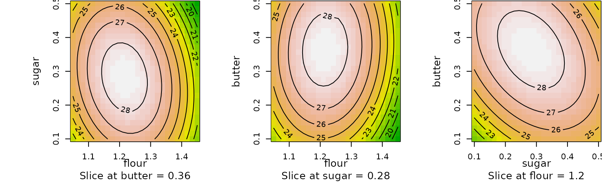

Response-surface illustration
rsm package, Version 2.10.5
illus.rmdAbstract
In this vignette, we give an illustration, using simulated data, of a sequential-experimentation process to optimize a response surface. I hope that this is helpful for understanding both how to use the rsm package and RSM methodology in general.
The scenario
We will use simulated data from a hypothetical baking experiment. Our goal is to find the optimal amounts of flour, butter, and sugar in a recipe. The response variable is some rating of the texture and flavor of the product. The baking temperature, procedures, equipment, and operating environment will be held constant.
Initial experiment
Our current recipe calls for 1 cup of flour, 0.50 cups of sugar, and
0.25 cups of butter. Our initial experiment will center at this recipe,
and we will vary each ingredient by \(\pm0.1\) cup. Let’s start with a minimal
first-order experiment, a half-fraction of a \(2^3\) design plus 4 center points. This is
a total of 8 experimental runs, which is quite enough given the labor
involved. The philosophy of RSM is to do minimal experiments that can be
augmented later if necessary if more detail is needed. We’ll generate
and randomize the experiment using cube, in terms of coded
variables \(x_1,x_2,x_3\):
library(rsm)
expt1 = cube(~ x1 + x2, x3 ~ x1 * x2, n0 = 4,
coding = c(x1 ~ (flour - 1)/.1, x2 ~ (sugar - .5)/.1, x3 ~ (butter - .25)/.1))So here is the protocol for the first design.
expt1## run.order std.order flour sugar butter
## 1 1 2 1.1 0.4 0.15
## 2 2 7 1.0 0.5 0.25
## 3 3 3 0.9 0.6 0.15
## 4 4 4 1.1 0.6 0.35
## 5 5 1 0.9 0.4 0.35
## 6 6 6 1.0 0.5 0.25
## 7 7 5 1.0 0.5 0.25
## 8 8 8 1.0 0.5 0.25
##
## Data are stored in coded form using these coding formulas ...
## x1 ~ (flour - 1)/0.1
## x2 ~ (sugar - 0.5)/0.1
## x3 ~ (butter - 0.25)/0.1It’s important to understand that cube returns a
coded dataset; this facilitates response-surface methodology in
that analyses are best done on a coded scale. The above design is
actually stored in coded form, as we can see by looking at it as an
ordinary data.frame:
as.data.frame(expt1)## run.order std.order x1 x2 x3
## 1 1 2 1 -1 -1
## 2 2 7 0 0 0
## 3 3 3 -1 1 -1
## 4 4 4 1 1 1
## 5 5 1 -1 -1 1
## 6 6 6 0 0 0
## 7 7 5 0 0 0
## 8 8 8 0 0 0But hold on a minute… First, assess the strategy
But wait! Before collecting any data, we really should plan ahead and make sure this is all going to work.
First-order design capability
First of all, will this initial design do the trick? One helpful tool
in rsm is the varfcn function, which
allows us to examine the variance of the predictions we will obtain. We
don’t have any data yet, so this is done in terms of a scaled variance,
defined as \(\frac
N{\sigma^2}\mathrm{Var}(\hat{y}(\mathbf{x}))\), where \(N\) is the number of design points, \(\sigma^2\) is the error variance and \(\hat{y}(\mathbf{x})\) is the predicted
value at a design point \(\mathbf{x}\).
In turn, \(\hat{y}(\mathbf{x})\)
depends on the model as well as the experimental design. Usually, \(\mathrm{Var}(\hat{y}(\mathbf{x}))\) depends
most strongly on how far \(\mathbf{x}\)
is from the center of the design (which is \(\mathbf{0}\) in coded units). Accordingly,
the varfcn function requires us to supply the design and
the model, and a few different directions to go from the origin along
which to plot the scaled variance (some defaults are supplied if not
specified). We can look either at a profile plot or a contour plot:
Not surprisingly, the variance increases as we go farther out—that is, estimation is more accurate in the center of the design than in the periphery. This particular design has the same variance profile in all directions: this is called a rotatable design.
Another important outcome of this is what do not see: there are no error messages. That means we can actually fit the intended model. If we intend to use this design to fit a second-order model, it’s a different story:
## Error in solve.default(t(mm) %*% mm): Lapack routine dgesv: system is exactly singular: U[5,5] = 0The point is, varfcn is a useful way to make sure you
can estimate the model you need to fit, before collecting any
data.
Looking further ahead
As we mentioned, response-surface experimentation uses a building-block approach. It could be that we will want to augment this design so that we can fit a second-order surface. A popular way to do that is to do a followup experiment on axis or “star” points at locations \(\pm\alpha\) so that the two experiments combined may be used to fit a second-order model. Will this work? And if so, what does the variance function look like? Let’s find out. It turns out that a rotatable design is not achievable by adding star points:
## Error in star(n0 = 2, alpha = "rotatable", basis = structure(list(run.order = 1:8, :
## Rotatable design is not achievable: inconsistent design momentsBut here are the characteristics of a design with \(\alpha = 1.5\):
par(mfrow=c(1,2))
followup = djoin(expt1, star(n0 = 2, alpha = 1.5))
varfcn(followup, ~ Block + SO(x1,x2,x3))
varfcn(followup, ~ Block + SO(x1,x2,x3), contour = TRUE)From this we can tell that we can at least augment the design to fit a second-order model. The model includes a block effect to account for the fact that two separately randomized experiments are combined.
OK, now we can collect some data
Now, pretend that you now go off and baked some cakes according to these recipes.
Time passes…
OK, the baking is over, and the results are in, and we entered them
in a new ratings column in expt1:
expt1## run.order std.order flour sugar butter rating
## 1 1 2 1.1 0.4 0.15 28.9
## 2 2 7 1.0 0.5 0.25 25.5
## 3 3 3 0.9 0.6 0.15 20.2
## 4 4 4 1.1 0.6 0.35 27.1
## 5 5 1 0.9 0.4 0.35 21.5
## 6 6 6 1.0 0.5 0.25 24.7
## 7 7 5 1.0 0.5 0.25 25.0
## 8 8 8 1.0 0.5 0.25 24.7
##
## Data are stored in coded form using these coding formulas ...
## x1 ~ (flour - 1)/0.1
## x2 ~ (sugar - 0.5)/0.1
## x3 ~ (butter - 0.25)/0.1We can now analyze the data using a first-order model (implemented in
rsm by the FO function). The model is
fitted in terms of the coded variables.
##
## Call:
## rsm(formula = rating ~ FO(x1, x2, x3), data = expt1)
##
## Estimate Std. Error t value Pr(>|t|)
## (Intercept) 24.70000 0.17963 137.5077 1.678e-08 ***
## x1 3.57500 0.25403 14.0731 0.0001479 ***
## x2 -0.77500 0.25403 -3.0508 0.0379977 *
## x3 -0.12500 0.25403 -0.4921 0.6484543
## ---
## Signif. codes: 0 '***' 0.001 '**' 0.01 '*' 0.05 '.' 0.1 ' ' 1
##
## Multiple R-squared: 0.9811, Adjusted R-squared: 0.9669
## F-statistic: 69.2 on 3 and 4 DF, p-value: 0.0006658
##
## Analysis of Variance Table
##
## Response: rating
## Df Sum Sq Mean Sq F value Pr(>F)
## FO(x1, x2, x3) 3 53.587 17.8625 69.2010 0.0006658
## Residuals 4 1.033 0.2581
## Lack of fit 1 0.605 0.6050 4.2456 0.1314343
## Pure error 3 0.428 0.1425
##
## Direction of steepest ascent (at radius 1):
## x1 x2 x3
## 0.97672947 -0.21173856 -0.03415138
##
## Corresponding increment in original units:
## flour sugar butter
## 0.097672947 -0.021173856 -0.003415138The take-home message here is that the first-order model does help explain the variations in the response (significant \(F\) statistic for the model, as well as two of the three coefficients of \(x_j\) are fairly significant); and also that there is no real evidence that the model does not fit (large P value for lack of fit). Finally, there is information on the direction of steepest ascent, which suggests that we could improve the ratings by increasing the flour and decreasing the sugar and butter (by smaller amounts in terms of coded units).
Explore the path of steepest-ascent
The direction of steepest ascent is our best guess for how we can
improve the recipe. The steepest function provides an easy
way to find some steps in the right direction, up to a distance of 5 (in
coded units) by default:
( sa1 = steepest(anal1) )## Path of steepest ascent from ridge analysis:## dist x1 x2 x3 | flour sugar butter | yhat
## 1 0.0 0.000 0.000 0.000 | 1.0000 0.5000 0.2500 | 24.700
## 2 0.5 0.488 -0.106 -0.017 | 1.0488 0.4894 0.2483 | 26.529
## 3 1.0 0.977 -0.212 -0.034 | 1.0977 0.4788 0.2466 | 28.361
## 4 1.5 1.465 -0.318 -0.051 | 1.1465 0.4682 0.2449 | 30.190
## 5 2.0 1.953 -0.423 -0.068 | 1.1953 0.4577 0.2432 | 32.018
## 6 2.5 2.442 -0.529 -0.085 | 1.2442 0.4471 0.2415 | 33.851
## 7 3.0 2.930 -0.635 -0.102 | 1.2930 0.4365 0.2398 | 35.680
## 8 3.5 3.419 -0.741 -0.120 | 1.3419 0.4259 0.2380 | 37.512
## 9 4.0 3.907 -0.847 -0.137 | 1.3907 0.4153 0.2363 | 39.341
## 10 4.5 4.395 -0.953 -0.154 | 1.4395 0.4047 0.2346 | 41.170
## 11 5.0 4.884 -1.059 -0.171 | 1.4884 0.3941 0.2329 | 43.002The yhat values show what the fitted model anticipates
for the rating; but as we move to further distances, these are serious
extrapolations and can’t be trusted. What we need is real data! So let’s
do a little experiment along this path, using the distances from 0.5 to
4.0, for a total of 8 runs. The dupe function makes a copy
of these runs and re-randomizes the order.
expt2 = dupe(sa1[2:9, ])Now we need to do some more baking based on this design. Time passes…
The data are now collected; and we have these results:
expt2## run.order std.order dist x1 x2 x3 | flour sugar butter |.1 yhat rating
## 1 1 8 4.0 3.907 -0.847 -0.137 | 1.3907 0.4153 0.2363 | 39.341 24.3
## 2 2 4 2.0 1.953 -0.423 -0.068 | 1.1953 0.4577 0.2432 | 32.018 26.6
## 3 3 1 0.5 0.488 -0.106 -0.017 | 1.0488 0.4894 0.2483 | 26.529 24.8
## 4 4 3 1.5 1.465 -0.318 -0.051 | 1.1465 0.4682 0.2449 | 30.190 27.5
## 5 5 7 3.5 3.419 -0.741 -0.120 | 1.3419 0.4259 0.2380 | 37.512 27.3
## 6 6 6 3.0 2.930 -0.635 -0.102 | 1.2930 0.4365 0.2398 | 35.680 27.8
## 7 7 5 2.5 2.442 -0.529 -0.085 | 1.2442 0.4471 0.2415 | 33.851 26.0
## 8 8 2 1.0 0.977 -0.212 -0.034 | 1.0977 0.4788 0.2466 | 28.361 25.3With a steepest-ascent path, the idea is to find the highest point along this path, and center the next experiment there. To that end, let’s look at it graphically:
plot(rating ~ dist, data = expt2)
anal2 = lm(rating ~ poly(dist, 2), data = expt2)
with(expt2, {
ord = order(dist)
lines(dist[ord], predict(anal2)[ord])
})
There is a fair amount of variation here, so the fitted quadratic
curve provides useful guidance. It suggests that we do our next
experiment at a distance of about \(2.5\) in coded units, i.e., near point #6
in the steepest-ascent path, sa1. Let’s use somewhat
rounder values: flour:\(1.25\)cups, sugar:\(0.45\)cups, and butter:\(0.25\)cups (unchanged from
expt1).
Relocated experiment
We can run basically the same design we did the first time around,
only with the new center. This is easily done using dupe
and changing the codings:
expt3 = dupe(expt1)
codings(expt3) = c(x1 ~ (flour - 1.25)/.1, x2 ~ (sugar - .45)/.1, x3 ~ (butter - .25)/.1)Again, off to do more baking … Once the data are collected, we have:
expt3## run.order std.order flour sugar butter rating
## 1 1 5 1.25 0.45 0.25 26.6
## 2 2 2 1.35 0.35 0.15 25.3
## 3 3 4 1.35 0.55 0.35 23.7
## 4 4 3 1.15 0.55 0.15 26.0
## 5 5 7 1.25 0.45 0.25 27.8
## 6 6 6 1.25 0.45 0.25 26.2
## 7 7 1 1.15 0.35 0.35 27.3
## 8 8 8 1.25 0.45 0.25 27.2
##
## Data are stored in coded form using these coding formulas ...
## x1 ~ (flour - 1.25)/0.1
## x2 ~ (sugar - 0.45)/0.1
## x3 ~ (butter - 0.25)/0.1… and we do the same analysis:
##
## Call:
## rsm(formula = rating ~ FO(x1, x2, x3), data = expt3)
##
## Estimate Std. Error t value Pr(>|t|)
## (Intercept) 26.26250 0.40509 64.8306 3.391e-07 ***
## x1 -1.07500 0.57289 -1.8765 0.1338
## x2 -0.72500 0.57289 -1.2655 0.2744
## x3 -0.07500 0.57289 -0.1309 0.9022
## ---
## Signif. codes: 0 '***' 0.001 '**' 0.01 '*' 0.05 '.' 0.1 ' ' 1
##
## Multiple R-squared: 0.5624, Adjusted R-squared: 0.2341
## F-statistic: 1.713 on 3 and 4 DF, p-value: 0.3015
##
## Analysis of Variance Table
##
## Response: rating
## Df Sum Sq Mean Sq F value Pr(>F)
## FO(x1, x2, x3) 3 6.7475 2.2492 1.7132 0.30145
## Residuals 4 5.2512 1.3128
## Lack of fit 1 3.7812 3.7812 7.7168 0.06911
## Pure error 3 1.4700 0.4900
##
## Direction of steepest ascent (at radius 1):
## x1 x2 x3
## -0.82768868 -0.55820864 -0.05774572
##
## Corresponding increment in original units:
## flour sugar butter
## -0.082768868 -0.055820864 -0.005774572This may not seem too dissimilar to the anal1 results,
and if you think so, that would suggest we just do another
steepest-ascent step. However, none of the linear (first-order) effects
are statistically significant, nor are they even jointly significant
(\(P\approx0.30\) in the ANOVA table);
so we don’t have a compelling case that we even know what that direction
might be! It seems better to instead collect more data in this region
and see if we get more clarity.
Foldover experiment
Recall that our first experiment was a half-fraction plus center
points. We can get more information by doing the other fraction. This is
accomplished using the foldover function, which reverses
the signs of some or all of the coded variables (and also re-randomizes
the experiment). In this case, the original experiment was generated
using \(x_3=x_1x_2\), so if we reverse
\(x_1\), we will have \(x_3=-x_1x_2\), thus the other half of the
experiment.
expt4 = foldover(expt3, variable = "x1")
expt4$rating = NULL ### discard previous rating data
expt4 # Here's the new protocol## run.order std.order flour sugar butter
## 1 1 2 1.15 0.35 0.15
## 2 2 7 1.25 0.45 0.25
## 3 3 3 1.35 0.55 0.15
## 4 4 4 1.15 0.55 0.35
## 5 5 5 1.25 0.45 0.25
## 6 6 6 1.25 0.45 0.25
## 7 7 8 1.25 0.45 0.25
## 8 8 1 1.35 0.35 0.35
##
## Data are stored in coded form using these coding formulas ...
## x1 ~ (flour - 1.25)/0.1
## x2 ~ (sugar - 0.45)/0.1
## x3 ~ (butter - 0.25)/0.1Note that this experiment does indeed have different factor
combinations (e.g., \((1.15,.35,.15))\)
not present in expt3.
Back to the kitchen again…
Once the data are collected, we have:
expt4## run.order std.order flour sugar butter rating
## 1 1 2 1.15 0.35 0.15 34.0
## 2 2 7 1.25 0.45 0.25 35.1
## 3 3 3 1.35 0.55 0.15 31.0
## 4 4 4 1.15 0.55 0.35 34.6
## 5 5 5 1.25 0.45 0.25 35.5
## 6 6 6 1.25 0.45 0.25 34.9
## 7 7 8 1.25 0.45 0.25 35.1
## 8 8 1 1.35 0.35 0.35 33.3
##
## Data are stored in coded form using these coding formulas ...
## x1 ~ (flour - 1.25)/0.1
## x2 ~ (sugar - 0.45)/0.1
## x3 ~ (butter - 0.25)/0.1For analysis, we will combine expt3 and
expt4, which is easily accomplished with the
djoin function. Note that djoin creates an
additional blocking factor:
## [1] "run.order" "std.order" "x1" "x2" "x3" "rating" "Block"It’s important to include this block effect in the model because we
have two separately randomized experiments. In this particular case,
it’s especially important because expt4 seems to have
higher values overall than expt3; either the raters are in
a better mood, or ambient conditions have changed. Here is our
analysis:
##
## Call:
## rsm(formula = rating ~ Block + FO(x1, x2, x3), data = djoin(expt3,
## expt4))
##
## Estimate Std. Error t value Pr(>|t|)
## (Intercept) 26.26250 0.40329 65.1208 1.388e-15 ***
## Block2 7.92500 0.57034 13.8953 2.543e-08 ***
## x1 -1.07500 0.40329 -2.6656 0.02197 *
## x2 -0.57500 0.40329 -1.4258 0.18169
## x3 0.32500 0.40329 0.8059 0.43739
## ---
## Signif. codes: 0 '***' 0.001 '**' 0.01 '*' 0.05 '.' 0.1 ' ' 1
##
## Multiple R-squared: 0.9486, Adjusted R-squared: 0.9299
## F-statistic: 50.72 on 4 and 11 DF, p-value: 5.075e-07
##
## Analysis of Variance Table
##
## Response: rating
## Df Sum Sq Mean Sq F value Pr(>F)
## Block 1 251.223 251.223 193.0793 2.543e-08
## FO(x1, x2, x3) 3 12.735 4.245 3.2625 0.063177
## Residuals 11 14.313 1.301
## Lack of fit 5 12.653 2.531 9.1464 0.008934
## Pure error 6 1.660 0.277
##
## Direction of steepest ascent (at radius 1):
## x1 x2 x3
## -0.8520282 -0.4557360 0.2575899
##
## Corresponding increment in original units:
## flour sugar butter
## -0.08520282 -0.04557360 0.02575899Now one of the first-order terms is significant. The lack of fit test is also quite significant. Response-surface experimentation is different from some other kinds of experiments in that it’s actually “ideal” in a way to have nonsignificant effects, especially first-order ones, because it would suggest we might be close to the peak. Well, we have one big first-order effect, but evidence of curvature; let’s carry on.
Augmenting further to estimate a second-order response surface
Because there is lack of fit, it’s now a good idea to collect data at
the “star” or axis points so that we can fit a second-order model. As
illustrated earlier, the star
function does this for us. We will choose the parameter
alpha (\(\alpha\)) so that
the star block is orthogonal to the cube blocks; this seems like a good
idea, given how strong we have observed the block effect to be. So here
is the next experiment, using the six axis points and 2 center points
(we already have 8 center points at this location), for 8 runs. The
analysis will be based on combining the cube clock, its foldover, and
the star block:
expt5 = star(expt4, n0 = 2, alpha = "orthogonal")
par(mfrow=c(1,2))
comb = djoin(expt3, expt4, expt5)
varfcn(comb, ~ Block + SO(x1,x2,x3))
varfcn(comb, ~ Block + SO(x1,x2,x3), contour = TRUE)This is not the second-order design we contemplated earlier, because it involves adding star points to the complete \(2^3\) design; but it has reasonable prediction-variance properties.
Time passes, more cakes are baked and rated, and we have these data:
expt5## run.order std.order flour sugar butter rating
## 1 1 4 1.250000 0.5914214 0.2500000 26.0
## 2 2 2 1.391421 0.4500000 0.2500000 23.9
## 3 3 6 1.250000 0.4500000 0.3914214 27.6
## 4 4 7 1.250000 0.4500000 0.2500000 26.7
## 5 5 1 1.108579 0.4500000 0.2500000 26.7
## 6 6 5 1.250000 0.4500000 0.1085786 27.3
## 7 7 3 1.250000 0.3085786 0.2500000 29.3
## 8 8 8 1.250000 0.4500000 0.2500000 27.4
##
## Data are stored in coded form using these coding formulas ...
## x1 ~ (flour - 1.25)/0.1
## x2 ~ (sugar - 0.45)/0.1
## x3 ~ (butter - 0.25)/0.1We will fit a second-order model, accounting for the block effect.
##
## Call:
## rsm(formula = rating ~ Block + SO(x1, x2, x3), data = djoin(expt3,
## expt4, expt5))
##
## Estimate Std. Error t value Pr(>|t|)
## (Intercept) 2.6996e+01 2.5051e-01 107.7647 < 2.2e-16 ***
## Block2 7.9250e+00 2.9641e-01 26.7366 4.601e-12 ***
## Block3 6.0000e-01 2.9641e-01 2.0242 0.065795 .
## x1 -1.0466e+00 1.7113e-01 -6.1160 5.208e-05 ***
## x2 -7.7224e-01 1.7113e-01 -4.5125 0.000711 ***
## x3 2.5202e-01 1.7113e-01 1.4727 0.166578
## x1:x2 -4.0000e-01 2.0959e-01 -1.9085 0.080537 .
## x1:x3 -1.5000e-01 2.0959e-01 -0.7157 0.487888
## x2:x3 7.9051e-16 2.0959e-01 0.0000 1.000000
## x1^2 -1.2393e+00 1.9405e-01 -6.3865 3.471e-05 ***
## x2^2 -6.4286e-02 1.9405e-01 -0.3313 0.746139
## x3^2 -1.6429e-01 1.9405e-01 -0.8466 0.413766
## ---
## Signif. codes: 0 '***' 0.001 '**' 0.01 '*' 0.05 '.' 0.1 ' ' 1
##
## Multiple R-squared: 0.9881, Adjusted R-squared: 0.9772
## F-statistic: 90.77 on 11 and 12 DF, p-value: 8.46e-10
##
## Analysis of Variance Table
##
## Response: rating
## Df Sum Sq Mean Sq F value Pr(>F)
## Block 2 311.523 155.762 443.2137 5.678e-12
## FO(x1, x2, x3) 3 21.064 7.021 19.9791 5.849e-05
## TWI(x1, x2, x3) 3 1.460 0.487 1.3848 0.294838
## PQ(x1, x2, x3) 3 16.845 5.615 15.9771 0.000172
## Residuals 12 4.217 0.351
## Lack of fit 5 2.312 0.462 1.6993 0.252578
## Pure error 7 1.905 0.272
##
## Stationary point of response surface:
## x1 x2 x3
## 1.0644952 -9.3180901 0.2810583
##
## Stationary point in original units:
## flour sugar butter
## 1.3564495 -0.4818090 0.2781058
##
## Eigenanalysis:
## eigen() decomposition
## $values
## [1] -0.03002067 -0.16052168 -1.27731479
##
## $vectors
## [,1] [,2] [,3]
## x1 0.16811860 -0.04985422 0.98450530
## x2 -0.98128332 -0.10360829 0.16232180
## x3 -0.09391048 0.99336795 0.06633959There are significant first and second-order terms now, and nonsignificant lack of fit. The summary includes a canonical analysis which gives the coordinates of the estimated stationary point and the canonical directions (eigenvectors) from that point. That is, the fitted surface is characterized in the form \(\hat{y}(v_1,v_2,v_3) = \hat{y}_s + \lambda_1v_1^2 + \lambda_2v_2^2 + \lambda_3v_3^2\) where \(\hat{y}_s\) is the fitted value at the stationary point, the eigenvalues are denoted \(\lambda_j\), and the eigenvectors are denoted \(v_j\). Since all three eigenvalues are negative, the estimated surface decreases in all directions from its value at \(\hat{y}_s\) and hence there is a maximum there. However, the stationary point is nowhere near the experiment, so this is an extreme extrapolation and not to be trusted at all. (In fact, in decoded units, the estimated optimum calls for a negative amount of sugar!) So the best bet now is to experiment on some path that leads us vaguely toward this distant stationary point.
Ridge analysis (second-order steepest ascent)
The steepest function again may be used; this time it
computes a curved path of steepest ascent, based on ridge analysis:
steepest(anal5)## Path of steepest ascent from ridge analysis:## dist x1 x2 x3 | flour sugar butter | yhat
## 1 0.0 0.000 0.000 0.000 | 1.2500 0.4500 0.2500 | 26.996
## 2 0.5 -0.227 -0.417 0.156 | 1.2273 0.4083 0.2656 | 27.484
## 3 1.0 -0.235 -0.922 0.307 | 1.2265 0.3578 0.2807 | 27.817
## 4 1.5 -0.189 -1.431 0.408 | 1.2311 0.3069 0.2908 | 28.102
## 5 2.0 -0.126 -1.939 0.473 | 1.2374 0.2561 0.2973 | 28.358
## 6 2.5 -0.055 -2.446 0.514 | 1.2445 0.2054 0.3014 | 28.591
## 7 3.0 0.020 -2.951 0.536 | 1.2520 0.1549 0.3036 | 28.804
## 8 3.5 0.098 -3.456 0.546 | 1.2598 0.1044 0.3046 | 28.999
## 9 4.0 0.178 -3.959 0.546 | 1.2678 0.0541 0.3046 | 29.177
## 10 4.5 0.258 -4.459 0.538 | 1.2758 0.0041 0.3038 | 29.337
## 11 5.0 0.339 -4.961 0.525 | 1.2839 -0.0461 0.3025 | 29.481After a distance of about 3, it starts venturing into unreasonable combinations of design factors. So let’s experiment at 8 distances spread 2/3 apart in coded units:
## Path of steepest ascent from ridge analysis:After the cakes have been baked and rated, we have
expt6## run.order std.order dist x1 x2 x3 | flour sugar butter |.1 yhat rating
## 1 1 3 1.3333333 -0.207 -1.261 0.379 | 1.2293 0.3239 0.2879 | 28.011 35.5
## 2 2 5 2.0000000 -0.126 -1.939 0.473 | 1.2374 0.2561 0.2973 | 28.358 33.8
## 3 3 2 1.0000000 -0.235 -0.922 0.307 | 1.2265 0.3578 0.2807 | 27.817 35.0
## 4 4 1 0.6666667 -0.241 -0.584 0.212 | 1.2259 0.3916 0.2712 | 27.603 34.1
## 5 5 7 2.6666667 -0.030 -2.615 0.523 | 1.2470 0.1885 0.3023 | 28.664 33.3
## 6 6 6 2.3333333 -0.079 -2.278 0.502 | 1.2421 0.2222 0.3002 | 28.516 34.2
## 7 7 4 1.6666667 -0.169 -1.600 0.433 | 1.2331 0.2900 0.2933 | 28.190 34.7
## 8 8 8 3.0000000 0.020 -2.951 0.536 | 1.2520 0.1549 0.3036 | 28.804 33.4And let’s do an analysis like that of expt2:
par(mar=c(4,4,0,0)+.1)
plot(rating ~ dist, data = expt6)
anal6 = lm(rating ~ poly(dist, 2), data = expt6)
with(expt6, {
ord = order(dist)
lines(dist[ord], predict(anal6)[ord])
})It looks like we should center a new experiment at a distance of 1.5 or so—perhaps flour still at 1.25, and both sugar and butter at .30.
Second-order design at the new location
We are now in a situation where we already know we have curvature, so we might as well go straight to a second-order experiment. It is less critical to assess lack of fit, so we don’t need as many center points. Note that each of the past experiments has 8 runs—that is the practical size for one block. All these things considered, we decide to run a central-composite design with the cube portion being a complete \(2^3\) design (8 runs with no center points), and the star portion including two center points (another block of 8 runs). Let’s generate the design, and magically do the cooking and the rating for these two 8-run experiments:
expt7 = ccd( ~ x1 + x2 + x3, n0 = c(0, 2), alpha = "orth", coding = c(
x1 ~ (flour - 1.25)/.1, x2 ~ (sugar - .3)/.1, x3 ~ (butter - .3)/.1))… and after the data are collected:
expt7## run.order std.order flour sugar butter Block rating
## 1 1 5 1.15 0.2 0.4 1 26.6
## 2 2 1 1.15 0.2 0.2 1 25.6
## 3 3 6 1.35 0.2 0.4 1 26.6
## 4 4 3 1.15 0.4 0.2 1 26.2
## 5 5 8 1.35 0.4 0.4 1 24.5
## 6 6 7 1.15 0.4 0.4 1 27.3
## 7 7 2 1.35 0.2 0.2 1 23.5
## 8 8 4 1.35 0.4 0.2 1 24.7
## 9 1 8 1.25 0.3 0.3 2 27.9
## 10 2 2 1.45 0.3 0.3 2 22.0
## 11 3 5 1.25 0.3 0.1 2 25.2
## 12 4 3 1.25 0.1 0.3 2 26.5
## 13 5 4 1.25 0.5 0.3 2 25.9
## 14 6 6 1.25 0.3 0.5 2 27.8
## 15 7 1 1.05 0.3 0.3 2 26.0
## 16 8 7 1.25 0.3 0.3 2 29.3
##
## Data are stored in coded form using these coding formulas ...
## x1 ~ (flour - 1.25)/0.1
## x2 ~ (sugar - 0.3)/0.1
## x3 ~ (butter - 0.3)/0.1It turns out that to obtain orthogonal blocks, locating the star points at \(\pm\alpha=\pm2\) is the correct choice for these numbers of center points; hence the nice round values. Here’s our analysis; we’ll go straight to the second-order model, and again, we need to include the block effect in the model.
##
## Call:
## rsm(formula = rating ~ Block + SO(x1, x2, x3), data = expt7)
##
## Estimate Std. Error t value Pr(>|t|)
## (Intercept) 27.90000 0.52417 53.2274 4.426e-08 ***
## Block2 0.70000 0.37064 1.8886 0.117568
## x1 -0.90000 0.18532 -4.8564 0.004648 **
## x2 -0.05000 0.18532 -0.2698 0.798093
## x3 0.63750 0.18532 3.4400 0.018436 *
## x1:x2 -0.27500 0.26208 -1.0493 0.342094
## x1:x3 0.10000 0.26208 0.3816 0.718466
## x2:x3 -0.40000 0.26208 -1.5262 0.187476
## x1^2 -1.15000 0.18532 -6.2055 0.001587 **
## x2^2 -0.60000 0.18532 -3.2376 0.023010 *
## x3^2 -0.52500 0.18532 -2.8329 0.036549 *
## ---
## Signif. codes: 0 '***' 0.001 '**' 0.01 '*' 0.05 '.' 0.1 ' ' 1
##
## Multiple R-squared: 0.9421, Adjusted R-squared: 0.8262
## F-statistic: 8.131 on 10 and 5 DF, p-value: 0.01602
##
## Analysis of Variance Table
##
## Response: rating
## Df Sum Sq Mean Sq F value Pr(>F)
## Block 1 1.9600 1.9600 3.5669 0.117568
## FO(x1, x2, x3) 3 19.5025 6.5008 11.8305 0.010422
## TWI(x1, x2, x3) 3 1.9650 0.6550 1.1920 0.401731
## PQ(x1, x2, x3) 3 21.2550 7.0850 12.8935 0.008653
## Residuals 5 2.7475 0.5495
## Lack of fit 4 1.7675 0.4419 0.4509 0.789337
## Pure error 1 0.9800 0.9800
##
## Stationary point of response surface:
## x1 x2 x3
## -0.3421914 -0.1772769 0.6420873
##
## Stationary point in original units:
## flour sugar butter
## 1.2157809 0.2822723 0.3642087
##
## Eigenanalysis:
## eigen() decomposition
## $values
## [1] -0.3390336 -0.7534946 -1.1824718
##
## $vectors
## [,1] [,2] [,3]
## x1 0.1562180 -0.1664741 0.973592470
## x2 -0.6513590 0.7236263 0.228246488
## x3 0.7425142 0.6698144 -0.004609058The model fits decently, and there are important second-order terms.
The most exciting news is that the stationary point is quite close to
the design center, and it is indeed a maximum since all three
eigenvalues are negative. It looks like the best recipe is around \(1.22\)c.flour, \(.28\)c.sugar, and \(.36\)c.butter. Let’s look at
this graphically using the contour function, slicing the
fitted surface at the stationary point.
par(cex.lab=1.25, cex.axis=1, cex.sub=1.5, mar=.1+c(4.5,7,0,0))
par(mfrow=c(1,3))
contour(anal7, ~ x1 + x2 + x3, at = xs(anal7), image = TRUE)
It’s also helpful to know how well we have estimated the stationary
point. A simple bootstrap procedure helps us understand this. In the
code below, we simulate 200 re-fits of the model, after scrambling the
residuals and adding them back to the fitted values; then plot the their
stationary points along with the one estimated from anal7.
The replicate function returns a matrix with 3 rows and 200
columns (one for each bootstrap replication); so we need to transpose
the result and decode the values.
fits = predict(anal7)
resids = resid(anal7)
boot.raw = suppressMessages(
replicate(200, xs(update(anal7, fits + sample(resids, replace=TRUE) ~ .))))
boot = code2val(as.data.frame(t(boot.raw)), codings=codings(anal7))
par(mar=.1+c(4,5,0,0), cex.lab=1.5)
par(mfrow = c(1,3))
plot(sugar ~ flour, data = boot, col = "gray"); points(1.215, .282, col = "red", pch = 7)
plot(butter ~ flour, data = boot, col = "gray"); points(1.215, .364, col = "red", pch = 7)
plot(butter ~ sugar, data = boot, col = "gray"); points(.282, .364, col = "red", pch = 7)These plots show something akin to a confidence region for the best recipe. Note they do not follow symmetrical elliptical patterns, as would a multivariate normal; this is due primarily to nonlinearity in estimating the stationary point.
Summary
For convenience, here is a tabular summary of what we did
| Expt | Center | Type | Runs | Result |
|---|---|---|---|---|
| 1 | \((1.00,.50,.25)\) | \(2^{3-1} + 4\times0\) | 8 | Fit OK, but we’re on a slope |
| 2 | SA path | 8 | Re-center at distance \(\sim2.5\) | |
| 3 | \((1.25,.45,.25)\) | \(2^{3-1} + 4\times0\) | 8 | Need more data to say much |
| 4 | same | Foldover | \(+8\) | LOF; need second-order design |
| 5 | same | Star block | \(+8\) | Suggests move to a new center |
| 6 | SA path | 8 | Re center at distance \(\sim1.5\) | |
| 7 | \((1.25,.30,.30)\) | CCD: \(2^3\); \(\text{star}+2\times0\) | \(8+8\) | Best recipe: (1.22,.28,.36) |
It has required 64 experimental runs to find this optimum. That is not too bad considering how much variation there is in the response measures.